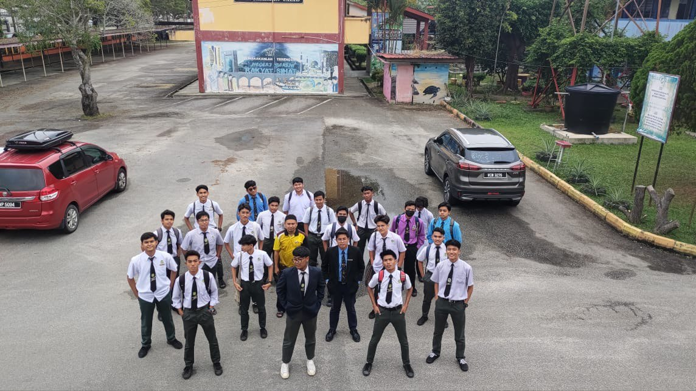
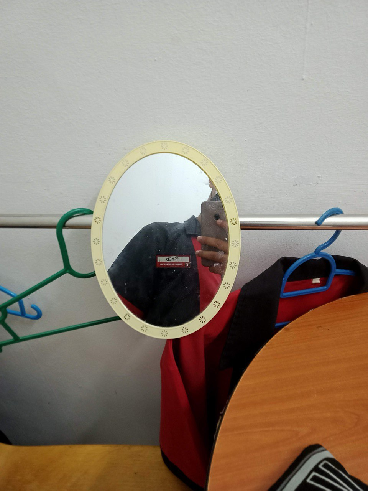
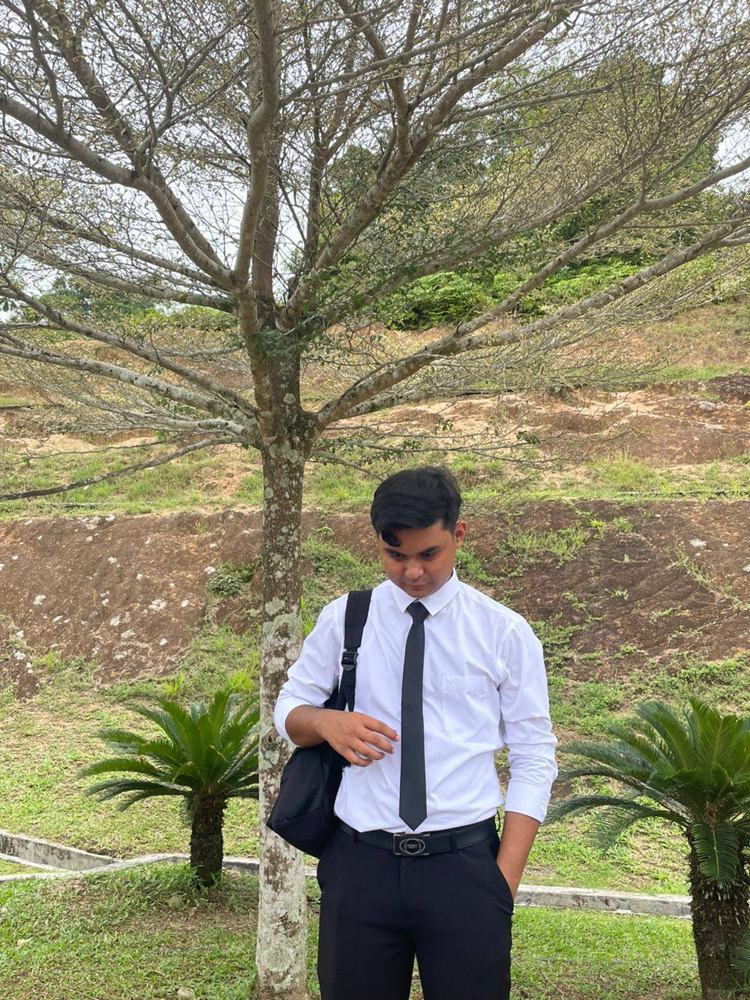
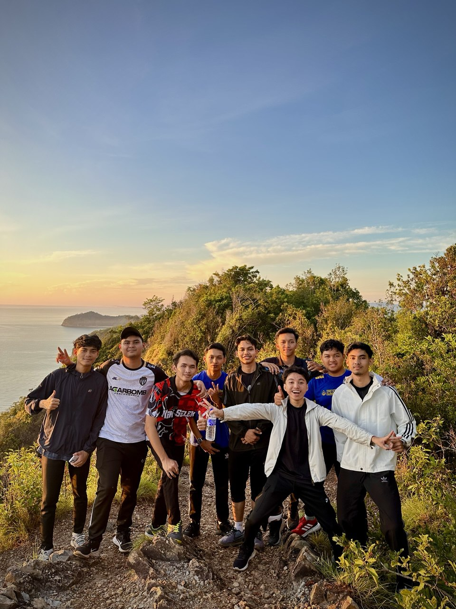
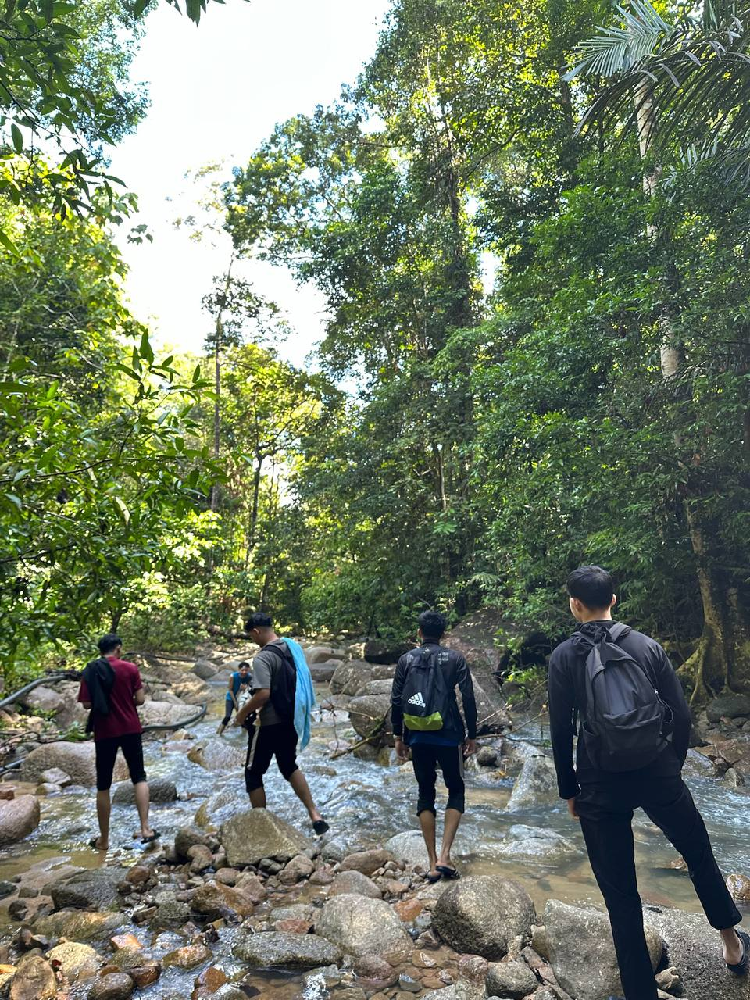

| Photo |
Event |
Story |
|  |
Last Paper of SPM |
My classmates decided to collaborate on creating a TikTok video with all of my friends and our classroom teacher as a fun and meaningful way to capture our shared moments. |
|  |
Part-time at 7eleven |
After completing my SPM, I worked part-time at 7-Eleven for two months. However, I decided to resign after receiving an offer to further my studies. |
|  |
First day in UiTM |
The photo was taken on the first day of MDS, capturing an important moment at the beginning of the program. |
|  |
Hiking Kluang Hill |
I went hiking at Kluang Hill with my housemates as a recreational activity to enjoy nature and stay active. |
 |
Go to Beach Boy |
I went to Beach Boy with my housemates, where we decided to stay overnight to enjoy the peaceful atmosphere and watch the sunrise together. |
 |
Dean Award Ceremony |
I attended the Dean’s Award Ceremony to celebrate academic achievements and recognize outstanding students. |
|  |
Go to River |
I went to the river in the morning because there was no water at home. |
 |
Manage Infofest Program |
I participated in managing InfoFest as a Part 5 Information Management student, helping to organize and coordinate the event. |